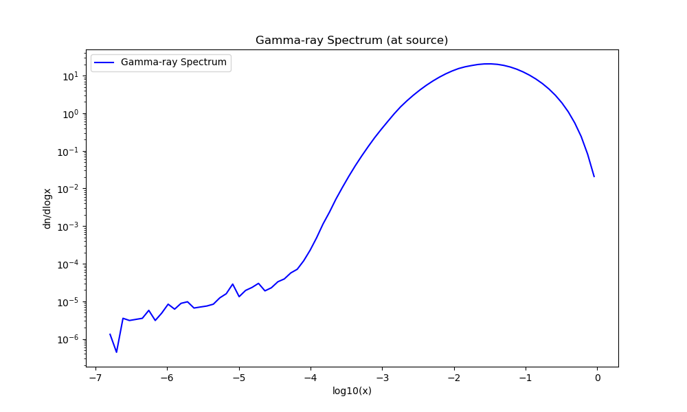

Note
Go to the end to download the full example code.
Indirect Detection Tutorial#
Compute indirect detection signals and limits from dark matter annihilation.
Dark Matter Annihilation into Photons#
Indirect detection looks for products of dark matter annihilation in astrophysical environment where the dark matter is denser. For instance, typical benchmarks for gamma-ray searches are the dSphs or the Galactic Center.
In this example, we study the process χ χ → SM SM using a DM simplified model which annihilates trough a vector mediator. We will see how compute the resulting gamma-ray spectra relevant for indirect detection using both Pythia 8 and CosmiXs.
First, import the model and define the dark matter candidate. We use the DMsimp_s_spin1_MD model, where the dark matter particle is labeled ‘~xd’ in this model.
MadDM> import model DMsimp_s_spin1_MD
MadDM> define darkmatter ~xd
Then, we generate the indirect detection process. This defines the channel for which the gamma-ray spectra will be computed. We then output the process to a folder named ‘ID_spin1’, and we launch the process.
MadDM> generate indirect_detection
MadDM> output ID_spin1
MadDM> launch ID_spin1
We enable the computation of the gamma-ray flux spectrum by setting:
MadDM> set indirect = flux_source
We can choose to compute the gamma-ray spectra using either Pythia 8 or CosmiXs, entering pythia8 or cosmix respectively:
MadDM> set indirect_flux_source_method cosmix
To save the full energy spectra you can set:
MadDM> set save_output spectra
You can enable the precise mode for a full integration over the DM velocity distribution. For a faster evaluation
you can use the fast mode, where the thermally averaged annihilation cross section is computed at a fixed velocity.
MadDM> set fast
In precise mode, you can choose between madevent and reshuffling methods of the event generator
MadEvent. This is not needed in fast mode.
MadDM> set sigmav_method madevent
In fast mode, to specify how many events should be generated per phase-space point, do:
MadDM> set nevents 100000
and finally launch the process pressing Enter.
Plot the Gamma-ray Spectra#
After running the above commands, you will find the output in the ID_spin1 folder.
The output will contain the gamma-ray spectra in the ID_spin1/Output/xxxx folder.
Here’s the gamma-ray spectra computed by MadDM using CosmiXs:
Plot the Gamma-ray Spectra using CosmiXs
import matplotlib.pyplot as plt
import numpy as np
def plot_gamma_spectra(spectra_file):
"""
Plots dn/dlogx vs log10(x) from the spectra file.
Parameters:
spectra_file (str): Path to the spectra file.
"""
logx_vals = []
dndlogx_vals = []
# Read the data file
with open(spectra_file, 'r') as file:
for line in file:
if line.startswith('#'):
continue # skip header lines
parts = line.strip().split()
if len(parts) != 2:
continue # skip malformed lines
logx, dndlogx = map(float, parts)
if dndlogx == 0:
continue # skip zero rates
logx_vals.append(logx)
dndlogx_vals.append(dndlogx)
logx_vals = np.array(logx_vals)
dndlogx_vals = np.array(dndlogx_vals)
# Plot the spectra
plt.figure(figsize=(10, 6))
plt.plot(logx_vals, dndlogx_vals, label='Gamma-ray Spectrum', color='blue')
plt.xlabel('log10(x)')
plt.ylabel('dn/dlogx')
plt.title('Gamma-ray Spectrum (at source)')
plt.yscale('log') # set y-axis to log scale
plt.legend()
plt.show()
plot_gamma_spectra('./plot_data/gammas_spectrum_CosmiXs.dat')

Exiting MadDM#
MadDM> quit
Total running time of the script: (0 minutes 0.165 seconds)